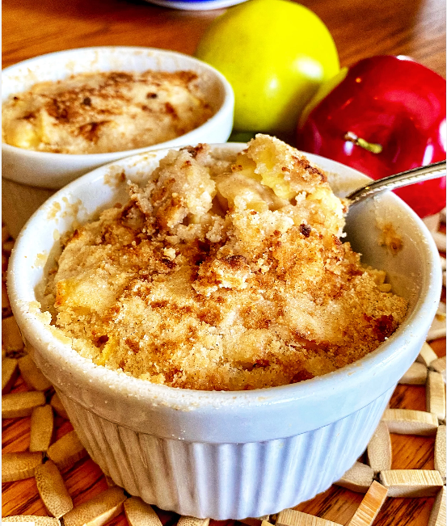

Air Fryer Apple Crumble
Air Fryer Apple Crumble
An easy recipe with a delicious golden brown crumble.
Recipe
Ingredients:
- 1 cup all-purpose flour
- ½ cup white sugar
- ¼ cup cold salted butter, cubed
- ½ teaspoon ground cinnamon
- ½ teaspoon baking powder
- ¼ teaspoon ground nutmeg
- cooking spray
- 2 ½ cups peeled, cored, and diced apples
Directions:
- Preheat an air fryer to 350 degrees F (175 degrees C).
- Place flour, sugar, and butter in a medium bowl. Use your hands to mix until crumbly. Stir in cinnamon, baking powder, and nutmeg.
- Spray two 4 1/2-inch ramekins with nonstick cooking spray. Add some crumble to the bottom of ramekins; top with some apples. Repeat 2 more times, ending with mounded crumble on top.
- Cover the ramekins with large pieces of foil, tucking ends underneath to prevent it from flying off. Air fry until apples are tender, 16 to 20 minutes. Remove foil and air fry until crumble is golden brown, 2 to 4 more minutes.